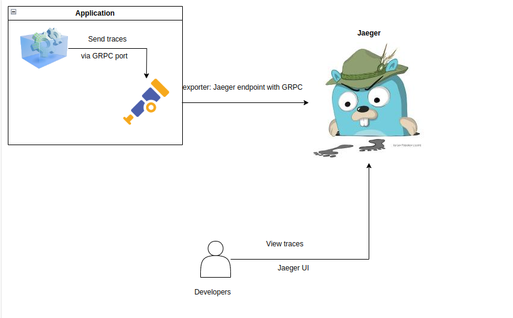
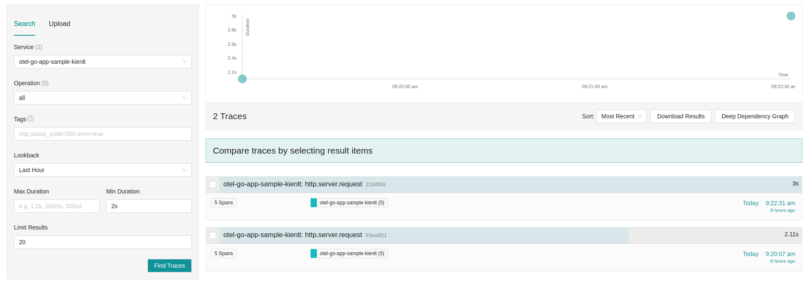
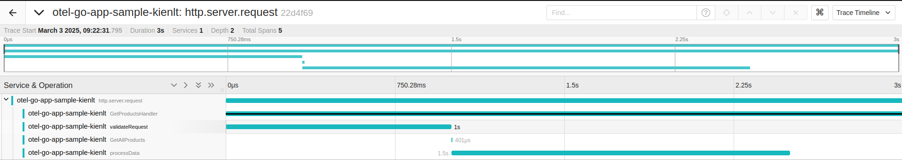
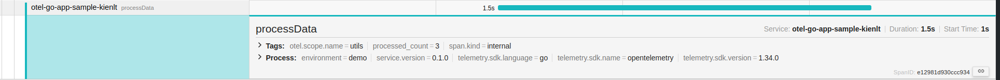

Introduction to Observability
It has 3 pillar we need to know in my knowledge - Metrics - Logs - Traces
So we will talk about Tracing in this article and it will comes with OpenTelemetry(OTel)
What is Open Telemetry (OTel)
It is observability frameworks for generating, collecting and exporting telemetry data such as traces, metrics and logs. But i will talk only about traces in this article. Metrics and Logs will be introduced in other arcticle with some following information: - Metrics: Response time, request volume, ingress success rate, status... via Prometheus standard. - Logs: Application send log to stdout and save those logs for debuging in Elasticsearch, VictoriaLogs with Fluentbit in K8S...
Although OTel supports all of them but i will use only using traces for a demo right now xD
Let's getting started with sample Go project with OTel
Setup quick OTel collector and Jaeger which can be considered as a backend in Localhost
-
Flows: 
-
Docker compose script:
services:
otel-collector:
image: otel/opentelemetry-collector-contrib:0.120.0
command: ["--config=/etc/otel-collector-config.yaml"]
volumes:
- ./otel-collector-config.yaml:/etc/otel-collector-config.yaml
ports:
- "4317:4317" # OTLP gRPC
- "4318:4318" # OTLP HTTP
networks:
- otel-network
jaeger:
image: jaegertracing/all-in-one:1.66.0
ports:
- "16686:16686" # Jaeger UI
- "14250:14250" # Receiver for otel-collector
environment:
- COLLECTOR_OTLP_ENABLED=true
networks:
- otel-network
networks:
otel-network:
- Otel config file
otel-collector-config.yaml:
receivers:
otlp:
protocols:
grpc:
endpoint: 0.0.0.0:4317
http:
endpoint: 0.0.0.0:4318
processors:
batch:
timeout: 1s
send_batch_size: 1024
memory_limiter:
check_interval: 1s
limit_mib: 1000
exporters:
debug:
verbosity: detailed
otlp:
endpoint: jaeger:4317
tls:
insecure: true
service:
pipelines:
traces:
receivers: [otlp]
processors: [memory_limiter, batch]
exporters: [otlp, debug]
- Docker ps output after
docker compose up
CONTAINER ID IMAGE COMMAND CREATED STATUS PORTS NAMES
d0138238848c jaegertracing/all-in-one:1.66.0 "/go/bin/all-in-one-…" 2 days ago Up 7 hours 4317-4318/tcp, 9411/tcp, 0.0.0.0:14250->14250/tcp, [::]:14250->14250/tcp, 14268/tcp, 0.0.0.0:16686->16686/tcp, [::]:16686->16686/tcp opentelemetry-go-app-jaeger-1
3466baff1cb6 otel/opentelemetry-collector-contrib:0.120.0 "/otelcol-contrib --…" 2 days ago Up 7 hours 0.0.0.0:4317-4318->4317-4318/tcp, [::]:4317-4318->4317-4318/tcp, 55678-55679/tcp opentelemetry-go-app-otel-collector-1
Setup Application expose data
I will leave my repo here: https://github.com/BlackMetalz/otel-go-app-sample
- Example when you request to path:
/products. It will connect to DB and some functions which i used to make "accident scenario" - Here is the explain generated by AI:
When you access the path `/products`, the following flow occurs:
1. **Router Setup**:
- The `SetupRouter` function configures the Gorilla Mux router to handle the `/products` endpoint with the `GetProductsHandler` function.
2. **Request Handling**:
- The `GetProductsHandler` function is invoked when a request is made to the `/products` endpoint.
3. **Tracing**:
- A new trace span is started for the `GetProductsHandler` function using OpenTelemetry.
4. **Request Validation**:
- The `validateRequest` function is called to simulate a validation step with a 1000ms delay and a 20% chance of failure.
- If validation fails, an error response is returned, and the trace span is annotated with the error.
5. **Database Query**:
- The `GetAllProducts` function is called to fetch all products from the database.
- A new trace span is started for the `GetAllProducts` function.
- The database query is executed, and the results are scanned into a slice of `Product` structs.
- If the database query fails, an error response is returned, and the trace span is annotated with the error.
6. **Parallel Slow API Call**:
- A goroutine is started to call the `HandleSlowAPI` function, which simulates a slow API response with a 1000ms delay.
- The result of the slow API call is sent to a channel.
7. **Data Processing**:
- The `processData` function is called to simulate additional processing with a 1500ms delay and a 30% chance of failure.
- If data processing fails, an error response is returned, and the trace span is annotated with the error.
8. **Wait for Slow API Result**:
- The handler waits for the result of the slow API call from the channel.
9. **Prepare Response**:
- A `Response` struct is created to combine the products, slow API status, slow API message, and processing status.
- The response is encoded as JSON and sent to the client.
10. **End Trace**:
- The trace span for the `GetProductsHandler` function is ended.
This flow ensures that the `/products` endpoint handles request validation, database querying, slow API calls, and data processing, all while being traced using OpenTelemetry.
- Output example:
{
"products": [
{
"id": 2,
"name": "table",
"quantity": 500,
"price": 100
},
{
"id": 3,
"name": "wardrobe",
"quantity": 100,
"price": 500
},
{
"id": 4,
"name": "Pens",
"quantity": 100,
"price": 10
}
],
"slow_status": 200,
"slow_message": "Slow API response at 2025-03-03T09:22:34+07:00\n",
"process_status": "success"
}
View the traces with Jaeger UI
- Let's take a look in UI to see how many spans and each span take how long for duration. First i filter for Min Duration is 2 seconds, it means request have more than 2 seconds to response.

-
Then i take a look in request with 3 seconds duration. You can see clearly each span takes how long to complete the handle 
-
I will look at span
processData Source code here: https://github.com/BlackMetalz/otel-go-app-sample/blob/main/utils/mysql.go#L112-L124
// processData simulates additional processing with a delay and possible error
func processData(ctx context.Context, products []Product) (string, error) {
_, span := otel.Tracer("utils").Start(ctx, "processData")
defer span.End()
time.Sleep(1500 * time.Millisecond) // Medium delay
if rand.Float32() < 0.3 { // 30% chance of failure
span.SetAttributes(attribute.String("error", "processing failed"))
return "failed", fmt.Errorf("data processing failed")
}
span.SetAttributes(attribute.Int("processed_count", len(products)))
return "success", nil
}
That is where 1.5 duration comes from in package utils which is matched with otel.scope.name
Conclusion
- Code is mostly generated by AI with my promt since I'm not developer, just a system guy want to learn Go xD